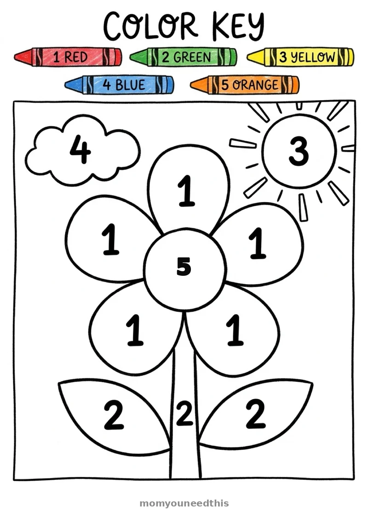

Flower Paint by Numbers Free Color-by-Number Printable, Ages 3+
Quick Answer
This free flower paint by numbers printable is made for ages 3 and up: big numbered sections, large clear numbers, and just 4 colors on the shared color key. The finished picture is a garden scene in miniature: a big flower with red petals and a yellow center on a green stem, under a blue cloud and a yellow sun. This is the gentlest of the scene sheets — four colors, one flower, nothing to rush.
At a Glance
- Activity: Flower Paint by Numbers
- Ages: 3+
- Colors: 4 (1 = Red, 2 = Green, 3 = Yellow, 4 = Blue)
- Sections: Extra-large, numbered
- Supplies: Printed sheet + crayons
- Time: ~15 min

🎨 Color Key for This Sheet
This sheet uses 4 colors from the shared key. The numbers mean the same thing on every sheet — 1 is always red, 2 is always green, and so on.
| Number | Color | What it colors |
|---|---|---|
| 1 | Red | petals |
| 2 | Green | stem and leaves |
| 3 | Yellow | center and sun |
| 4 | Blue | cloud |
This sheet skips orange — 4 colors. The sun and the flower center are both yellow (3).
🖍️ How to Color This Sheet
- Set out the crayons. Only the 4 colors this sheet uses — red, green, yellow and blue. Fewer choices, faster start.
- Point at the key together. “1 is red” — find a petal and hold the red crayon over it. The petals are the flower's biggest sections, and one demo there teaches the whole game.
- Let them work in any order. All the petals first and bloom the flower early, or grow it properly — stem, leaves, then petals — both are correct. The rule is just: number matches color.
- Say the numbers and colors out loud. “That's a 3 — yellow, the sun AND the middle!” turns each section into a tiny number-and-color quiz.
🧠 What Kids Learn From This Flower Sheet
This flower sheet teaches the parts of a plant without a single label. Petals on top, center in the middle, stem below, leaves on the stem — a child who has colored this page has handled the anatomy of a flower in the right order, and will recognize the same arrangement on every real flower they pass. That is science learning wearing a coloring page's clothes.
It also teaches a color-key subtlety the other sheets do not: the number 3 does two jobs. Yellow is both the flower's center and the sun, so the same crayon comes out twice for two different things. Children learn that the key maps numbers to colors, not numbers to objects — one color can serve many parts of a picture.
The find-match-fill loop runs underneath it all: find the number, match it to the key, fill the section — with a cloud and a sun to finish the scene once the flower itself is done.
🎨 Make It Your Own
The color key is a starting point, not a rule. Once your child has colored the flower the “right” way — red petals, yellow center — print another copy and let them plant a wild one: blue petals, a purple stem, an orange cloud. Gardens in storybooks break the color rules constantly, and inventing a flower that could never grow is half the fun.
A sweet middle option: color the flower correctly, then give the finished picture to someone as a card. A flower that never wilts, colored by hand, is a genuinely good gift from a preschooler — this sheet was made for that.
🖍️ More Paint by Numbers Sheets
Try another sheet — same color key, new picture.
👨👩👧 A Quiet Activity That Actually Works
This is the calmest sheet in the set: four colors, one flower, a sun and a cloud. It suits the moments that need lowering, not raising — after a busy morning, before nap, on a grandparent's porch. There is no busy background to conquer and no long tail of tiny sections; a preschooler can finish it in one sitting and feel the whole thing is done.
It also travels well. One page and four crayons fit in a restaurant folder or a waiting-room bag, and the finished flower makes a card, a fridge picture, or a spring decoration. Print several: flowers are the one picture nobody minds seeing three of in a row.
❓ Flower Paint by Numbers FAQs
How does the flower paint by numbers sheet work?
Each section of the flower picture has a number. Match the number to the color key (1 = Red, 2 = Green, 3 = Yellow, 4 = Blue), pick up that crayon, and color the section. The petals are red (1), the stem and leaves are green (2), the center and the sun are both yellow (3), and the cloud is blue (4).
What age can kids do this flower paint by numbers sheet?
Ages 3 and up. This sheet uses 4 colors and extra-large numbered sections, so preschoolers can manage it — the petals are big and forgiving, and there are no tiny sections at all. It is a good first sheet for a child who has never tried paint by numbers.
Is this flower paint by numbers printable free?
Yes — completely free, no signup or email required. Download the PDF, print it, and color it as many times as you like. Finished flowers make lovely handmade cards.
📚 Keep Exploring
- 🎨 All Paint by Numbers Sheets 8 free color-by-number printables for kids.
- ✏️ Drawing Tutorials 76 free step-by-step drawing tutorials for kids.
- 🎁 Free Resources Free printables and resources for busy moms.